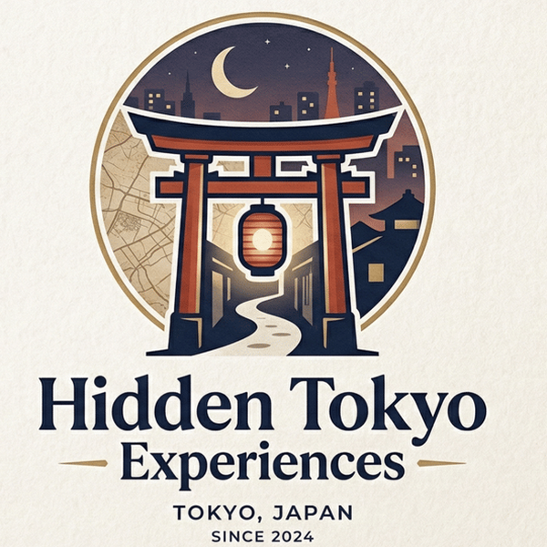

Zen temples, Totoro's real forest, sake breweries and samurai ruins — all within 45 minutes of Ikebukuro, and blissfully free of crowds. Guided by a local who actually lives here.
Walk through a 500-year-old Zen temple garden, explore Japan's most unique fermentation theme park, and taste sake brewed with mountain spring water at Igarashi Brewery. This is not Asakusa. This is not a bus tour. This is the real Japan.
Every tour is ★5.0-rated, small-group, and books instantly on GetYourGuide.
Totoro's forest is real — and it's just 40 minutes from Tokyo. Misty cedar paths, a hidden lake, and a cup of tea poured by a local farmer.
Book this tourHow Tokyo locals truly unwind — and tourists almost never find out. A quiet riverside walk, then an authentic Japanese bathhouse. No crowds. No rush.
Book this tour500 years of silence. One path. No tourists. Walk the ancient monks' path through cedar forest and feel what "Zen" actually means.
Book this tourManga wasn't born in Akihabara. Surprise. The real origin story of manga and anime culture is hidden in a quiet corner of Tokyo — museum entry included.
Book this tourA samurai fortress. A hidden park. The best udon you've never heard of. Walk the castle grounds, then a bowl of Musashino udon that'll ruin all other noodles for you.
Book this tour
I was born and raised in Tokyo, and I've spent my life exploring the corners of this city that never make it into guidebooks. By day I work in international business; on weekends I share the places I actually love — quiet temples, forest trails, neighborhood bathhouses, and the best noodle shops nobody photographs.
Every tour is small (six guests max), unhurried, and personal. You won't follow a flag. You'll walk with a local friend.
— Hide, founder of Hidden Tokyo Experiences
Every listed tour holds a perfect rating from past guests.
Six guests maximum. Conversations, not headcounts.
Tokyo born and raised — these are the places I go on my own days off.
Instant confirmation and free cancellation via GetYourGuide.
Not sure which tour fits your schedule — or want help shaping your whole Japan trip? I build personalized day-by-day itineraries: off-the-beaten-path spots, restaurant picks, transport logistics, and honest advice from someone who actually lives here. Delivered in 2 days, from $50.
Itineraries ordered securely via Upwork · questions: use the email link above (replies within 24h)
Dates fill up fast in autumn — grab the launch discount on the new Hanno sake tour while it lasts.
Book the Hanno Tour — ¥10,500